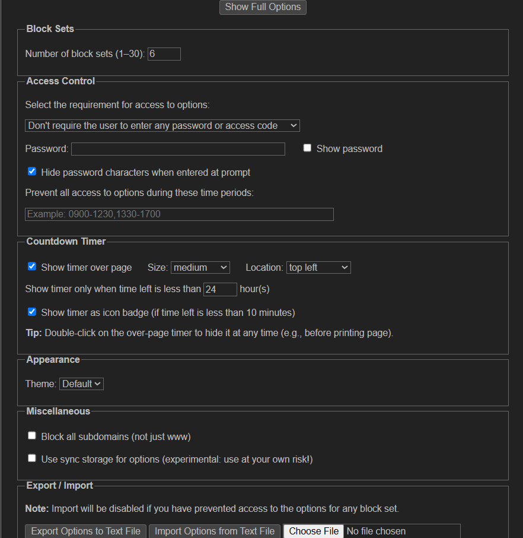
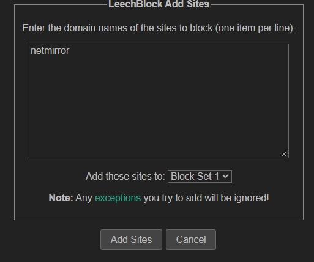
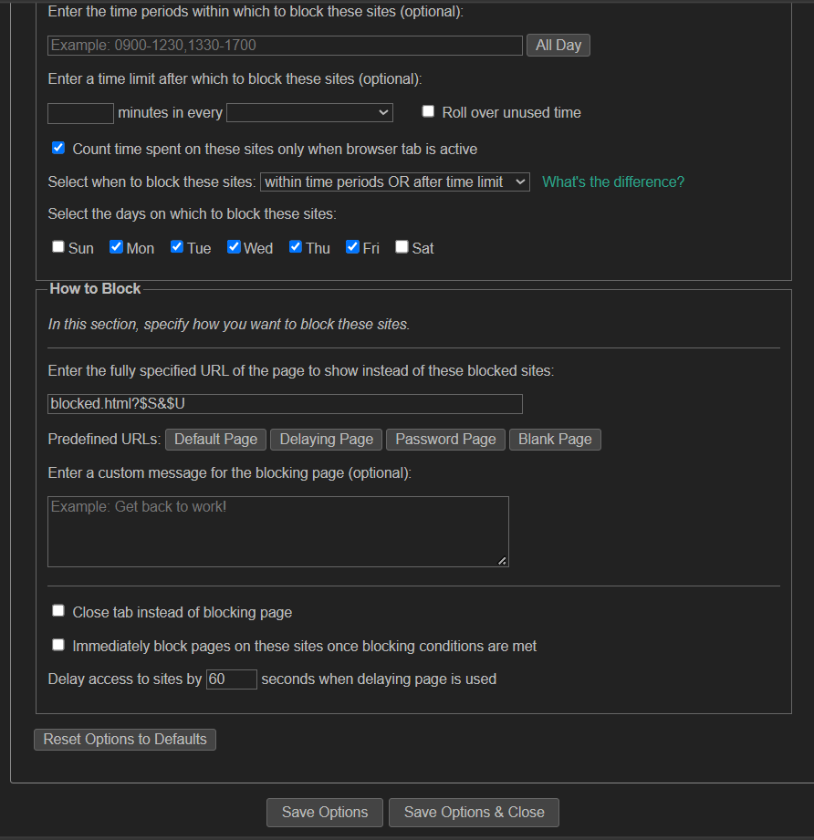
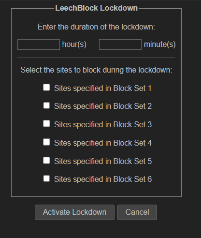
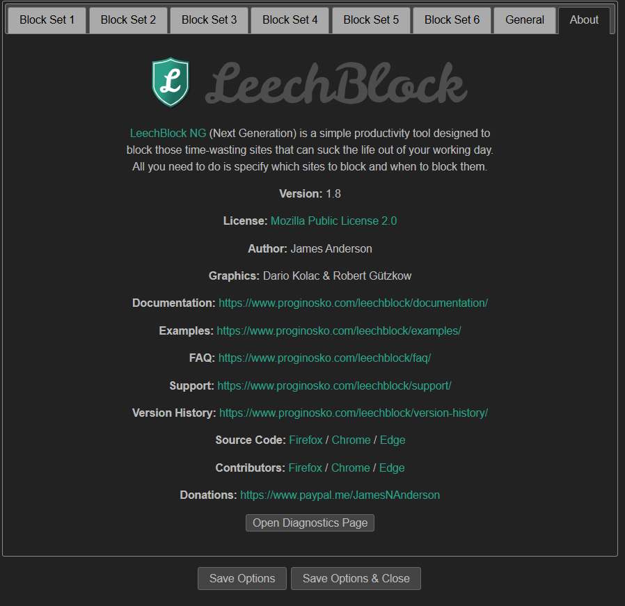
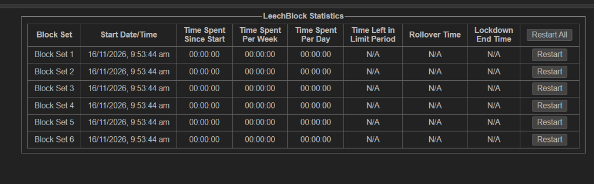
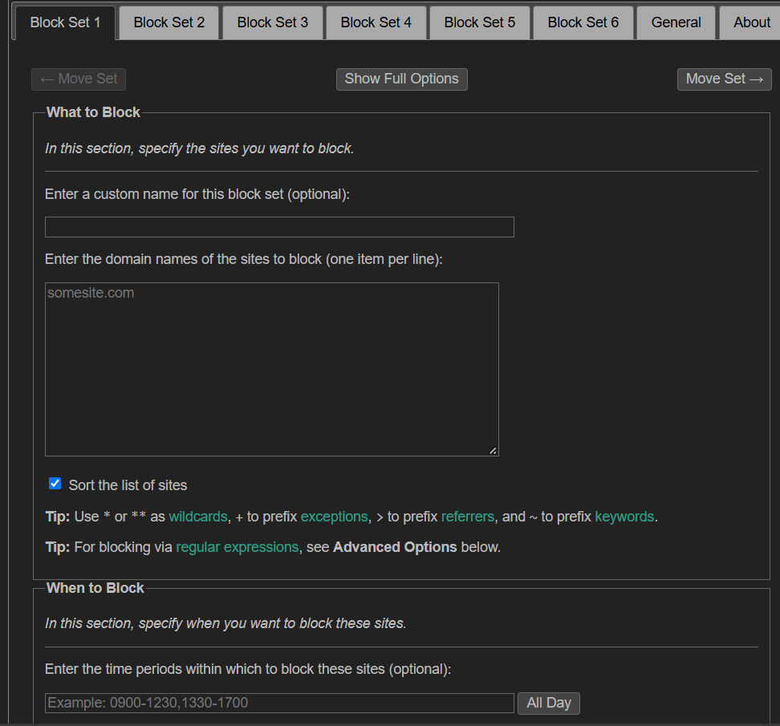
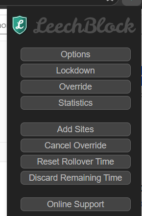

Install the free, open-source LeechBlock NG extension directly from the official store of your preferred desktop browser (Firefox Add-ons, Chrome Web Store, or Microsoft Edge Add-ons). LeechBlock NG is a lightweight, local extension that collects zero user analytics and requires no account creation.

Extension Toolbar Quick Menu

One-Click Quick Add Sites Modal
Figure 1.1: Extension toolbar quick menu and fast site adding. Pinning LeechBlock to your browser bar allows you to instantly blacklist a distraction site the second you notice yourself wandering off-task.
Getting started with your browser:
- Click the puzzle piece icon on your browser toolbar, locate LeechBlock NG, and pin it to ensure permanent one-click access.
- Quick-Add Distractions on the Fly: Whenever you find yourself opening an entertainment portal during study hours (e.g. streaming sites like netmirror, Reddit, or gaming feeds), click the LeechBlock toolbar shield and select Add Sites.
- Type or confirm the domain name and click Add Sites to instantly bind it to Block Set 1 without needing to open the full settings menu.
Open the toolbar menu and click Options. LeechBlock provides six independent block sets (expandable up to 30), allowing you to separate general daytime social media from total exam lockdown lists.

Block Set 1: Domain List Configuration & Syntax Rules
Figure 1.2: Configuring target domains. Master LeechBlock's advanced syntax symbols (+ for exceptions, * for wildcards, and ~ for keywords) to tailor your rules.
Essential domain configuration for university students:
Automating your schedule eliminates the daily friction of having to remember to activate focus tools. LeechBlock engages automatically when your college classes and revision blocks begin.

Automated Schedule & Calming Redirection Page
Figure 1.3: Setting study hours and redirect rules. Check Monday through Friday, enforce active-tab time counting, and display a calm custom message.
How to configure your study schedule:
- Enter Time Periods: In the "When to Block" input, enter your study sprint hours using 24-hour notation:
0900-1300,1400-1730.
- Active Tab Time Counting: Check "Count time spent on these sites only when browser tab is active". This ensures you are not penalized if a tab sits idle in the background.
- Select Study Days: Check the boxes for Mon, Tue, Wed, Thu, and Fri (and weekends during exam revision weeks).
- Customize How to Block: Under "How to Block", set the redirect URL to
blocked.html⏱$S&$U. Under "Enter a custom message", write an encouraging study reminder such as: "Get back to work! Assignment due Friday."
- Delaying Page (Alternative): Choose Delaying Page with a 60-second delay to introduce a critical cooling-off pause before access is granted.
Most browser blockers fail because when students encounter a difficult homework problem or study fatigue, they simply open extension settings and disable the blocker. LeechBlock provides an uncheatable psychological barrier: Access Control.

General Settings: Access Control Friction & Floating Timer
Figure 1.4: Access Control settings. Prevent access to the options page during study hours and require a typed random challenge code or partner password.
Activating your anti-tamper lock:
- Click the General tab and locate the Access Control section.
- Under "Select the requirement for access to options", choose Require the user to enter a random access code (32 to 64 characters) or set a password entered by a trusted study partner or roommate. You cannot copy-paste this code—you must physically type each character by hand, which interrupts impulsive dopamine clicks and forces cognitive reflection.
- Under Prevent all access to options during these time periods, enter your study hours (e.g.
0900-1300,1400-1730). During these hours, LeechBlock will literally refuse to open its options screen.
- Countdown Timer: Check "Show timer over page" and "Show timer as icon badge" so you can clearly see how many minutes of break time remain.
When preparing for a scheduled exam, thesis sprint, or laboratory submission outside your regular timetable, use LeechBlock's nuclear option: Lockdown.

Lockdown Modal: Instant Unbreakable Study Isolation
Figure 1.5: Activating an immediate lockdown. Select your sprint duration and target block sets. Once engaged, lockdown cannot be cancelled until the countdown expires.
To launch a study sprint:
- Click the LeechBlock toolbar icon and select Lockdown.
- In the modal window, enter the duration of your focus sprint: e.g. 0 hours and 50 minutes (for a Pomodoro block) or 2 hours and 0 minutes (for an exam practice paper).
- Check Sites specified in Block Set 1.
- Click Activate Lockdown. All specified entertainment sites are immediately blocked across all open windows. Even if you attempt to edit options or open new tabs, the lockdown remains inviolable until the timer hits zero.
LeechBlock NG includes detailed time accounting across all block sets, helping you measure recovered study hours with zero privacy compromise.

LeechBlock Telemetry Statistics Table

FOSS License Verification (MPL 2.0)
Figure 1.6: Statistics table and About verification. The extension provides transparent local time accounting and is guaranteed 100% Free and Open Source Software (FOSS) by author James Anderson.
Long-term habit maintenance:
- Inspect Statistics Weekly: Click Statistics from the toolbar menu to view your time accounting across all 6 Block Sets. Track exact hours spent per week and per day to verify that your screen time is progressively trending down.
- FOSS Trust Verification: In the About tab, confirm the software is licensed under the Mozilla Public License 2.0 (MPL 2.0). Because it is completely open source and community-reviewed, students can be 100% confident that no private search queries, keystrokes, or browsing habits are ever collected or monetized.